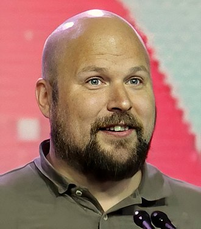

Minecraft is a sandbox game developed by Mojang Studios. The
game was created by Markus "Notch" Persson in the Java programming language. Following several early private
testing versions, it was first made public in May 2009 before being fully released in November 2011, with
Notch stepping down and Jens "Jeb" Bergensten taking over development. Minecraft is the best-selling video
game in history, with over 238 million copies sold and nearly 140 million monthly active players as of 2021
and has been ported to several platforms.
Minecraft is a sandbox game developed by Mojang Studios. The
game was created by Markus "Notch" Persson in the Java programming language. Following several early private
testing versions, it was first made public in May 2009 before being fully released in November 2011, with
Notch stepping down and Jens "Jeb" Bergensten taking over development. Minecraft is the best-selling video
game in history, with over 238 million copies sold and nearly 140 million monthly active players as of 2021
and has been ported to several platforms.
In Minecraft, players explore a blocky, procedurally generated, three-dimensional world with virtually
infinite terrain and may discover and extract raw materials, craft tools and items, and build structures,
earthworks, and machines. Depending on their chosen game mode, players can fight hostile mobs, as well as
cooperate with or compete against other players in the same world. Game modes include a survival mode (in
which players must acquire resources to build in the world and maintain health) and a creative mode (in
which players have unlimited resources and access to flight). There is also a wide variety of user-generated
content, such as modifications, servers, skins, texture packs, and custom maps, which add new game mechanics
and possibilities.
Minecraft has received critical acclaim, winning several awards and later being cited as one of the greatest
video games ever created. Social media, parodies, adaptations, merchandise, and the annual Minecon
conventions played prominent roles in popularizing the game. The game has also been used in educational
environments to teach chemistry, computer-aided design, and computer science. In 2014, Mojang and the
Minecraft intellectual property were purchased by Microsoft for US$2.5 billion. Several spin-offs have also
been made, including Minecraft: Story Mode, Minecraft Dungeons, Minecraft Earth, and the upcoming Minecraft
Legends.

Markus Alexej Persson; born 1 June 1979, also
known as Notch, is a Swedish video game programmer and designer.
He is best known for creating the sandbox video game Minecraft and for founding the video game company
Mojang in 2009.
Persson's principal venture for founding Mojang was Minecraft which gained popularity and support since its
tech demo in 2009.Since then, he has gained significant notability within the video game industry,
winning multiple awards and establishing relations with the industry's figureheads. He retained his
position as the lead designer of Minecraft until the game's official launch in 2011, after which he
transferred creative authority to Jens Bergensten. He had continued to work on Minecraft until he left
Mojang in September 2014, after its acquisition by Microsoft for $2.5 billion. Microsoft eventually
dissociated from Persson following controversial comments regarding topics such as race and gender on his
Twitter account.
Biography:
Markus Alexej Persson was born in Stockholm, Sweden, to a Finnish mother and a Swedish father on 1 June
1979. He lived in Edsbyn for the first seven years of his life before his family moved back to
Stockholm. He began programming on his father's Commodore 128 home computer at the age of seven.
Having experimented with various type-in programs he produced his first game at the age of eight, a
text-based adventure game. Professionally he had worked as a game developer for King for over four
years, until 2009. Afterwards he worked as a programmer for Jalbum. He is also one of the
founders of Wurm Online, though he no longer works on it. Outside of work, he has made seven games
for competitions. He is the central figure of Minecraft: The Story of Mojang, a documentary by 2 Player
Productions about the rise of Minecraft and Mojang.